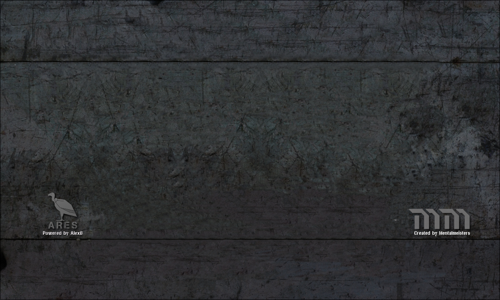

<div class="w-screen h-screen text-white main-bg">
  
  <div class="flex justify-center items-center w-screen h-screen relative">
    <div class="flex w-4/5 h-4/5">
      <div class="flex flex-col w-2/5">
        <div>单人任务</div>
        <ul class="mission-list">
          <div class="mission-banner">-- 同盟国联军: 第一幕 --</div>
          <li class="allies selected">盟军任务01: 赤色黎明</li>
          <li class="allies">盟军任务02: 鹰击长空</li>
          <li class="allies">盟军任务03: 旅途之路</li>
          <li class="allies">盟军任务04: 天堂与地狱</li>
          <li class="allies">盟军任务05: 坏苹果</li>
          <li class="allies">盟军任务06: 美丽心灵</li>
          <li class="allies">盟军任务07: 重锤陷落</li>
          <li class="allies">盟军任务08: 危机边缘</li>
          <li class="allies">盟军任务09: 零信号</li>
          <li class="allies">盟军任务10: 园丁</li>
          <li class="allies">盟军任务11: 险象环生</li>
          <li class="allies">盟军任务12: 曙光（结局）</li>
          <div class="mission-banner">-- 同盟国联军: 第二幕 --</div>
          <li class="allies">盟军任务13: 美人鱼</li>
          <li class="allies">盟军任务14: 傀儡师</li>
          <li class="allies">盟军任务15: 冷面狂人</li>
          <li class="allies">盟军任务16: 幽灵狩猎</li>
          <li class="allies">盟军任务17: 瓶颈</li>
          <li class="allies">盟军任务18: 歇斯底里</li>
          <li class="allies">盟军任务19: 暴风使者</li>
          <li class="allies">盟军任务20: 偏执狂</li>
          <li class="allies">盟军任务21: 毫不留情</li>
          <li class="allies">盟军任务22: 极昼</li>
          <li class="allies">盟军任务23: 逆流而上</li>
          <li class="allies">盟军任务24: 罪与罚（结局）</li>
          <div class="mission-banner">-- 苏维埃联盟: 第一幕 --</div>
          <li class="soviets">苏联任务01: 血色蔓延</li>
          <li class="soviets">苏联任务02: 金门之战</li>
          <li class="soviets">苏联任务03: 生日快乐</li>
          <li class="soviets">苏联任务04: 副作用</li>
          <li class="soviets">苏联任务05: 和平条约</li>
          <li class="soviets">苏联任务06: 充电器</li>
          <li class="soviets">苏联任务07: 流言蜚语</li>
          <li class="soviets">苏联任务08: 死从天降</li>
          <li class="soviets">苏联任务09: 无果之路</li>
          <li class="soviets">苏联任务10: 战争狂人</li>
          <li class="soviets">苏联任务11: 不可撼动</li>
          <li class="soviets">苏联任务12: 巨龙风暴（结局）</li>
          <div class="mission-banner">-- 苏维埃联盟: 第二幕 --</div>
          <li class="soviets">苏联任务13: 暗鸦</li>
          <li class="soviets">苏联任务14: 复苏</li>
          <li class="soviets">苏联任务15: 逃出生天</li>
          <li class="soviets">苏联任务16: 赴汤蹈火</li>
          <li class="soviets">苏联任务17: 主宰</li>
          <li class="soviets">苏联任务18: 心血结晶</li>
          <li class="soviets">苏联任务19: 力量嗜欲</li>
          <li class="soviets">苏联任务20: 恐惧之路</li>
          <li class="soviets">苏联任务21: 熔毁</li>
          <li class="soviets">苏联任务22: 地出</li>
          <li class="soviets">苏联任务23: 致命冲击</li>
          <li class="soviets">苏联任务24: 死神之手（结局）</li>
        </ul>
      </div>
      <div class="flex flex-col w-3/5 ml-2">
        <div>任务描述</div>
        <div class="mission-desc p-2">
          <p>同盟国联军第一幕——任务01——军事行动：赤色黎明</p>
          <p>地点：美国，华盛顿特区——玩家：美国</p>
          <p>&nbsp;</p>
          <p>
            渴望复仇的苏联向美利坚合众国发动了全面入侵。和平守护者洲际导弹也因未知原因而瘫痪，苏联和美国之间的屏障仅剩一片渺小的海洋。
          </p>
          <p>任务目标一：在苏联的入侵中保卫华盛顿特区</p>
          <p>任务目标二：保护五角大楼</p>
          <p>&nbsp;</p>
          <p>点击游戏中的“简报”按钮以查看每个任务的完整简报。对于首次接触心灵终结的玩家，建议从“休闲”难度开始游戏</p>
        </div>
        
        <div class="flex flex-col items-center">
          难度
          <div class="w-3/4 grid grid-cols-3 border-2 border-black bg-black">
            <functional-button
              class="difficulty-button difficulty-button-active"
              func-type="external-link"
              link="https://github.com/Cylearun-starforge/electron-cnc-client"
            ></functional-button>
            <functional-button
              class="difficulty-button"
              func-type="external-link"
              link="https://github.com/Cylearun-starforge/electron-cnc-client"
            ></functional-button>
            <functional-button
              class="difficulty-button"
              func-type="external-link"
              link="https://github.com/Cylearun-starforge/electron-cnc-client"
            ></functional-button>
          </div>
          <div class="w-5/6 flex justify-between">
            <div>休闲</div>
            <div>普通</div>
            <div>终结</div>
          </div>
          <div class="flex justify-between w-full">
            <functional-button
              class="button mx-4 w-full h-fit"
              func-type="external-link"
              link="https://github.com/Cylearun-starforge/electron-cnc-client"
              >开始游戏</functional-button
            >
            <functional-button
              class="button mx-4 w-full h-fit"
              func-type="external-link"
              link="http://mentalomega.com/ch/index.php?page=playthrough"
              >通关视频</functional-button
            >
            <functional-button class="button mx-4 w-full h-fit" func-type="client-link" link=""
              >返回主菜单</functional-button
            >
          </div>
        </div>
      </div>
    </div>
  </div>
</div>
